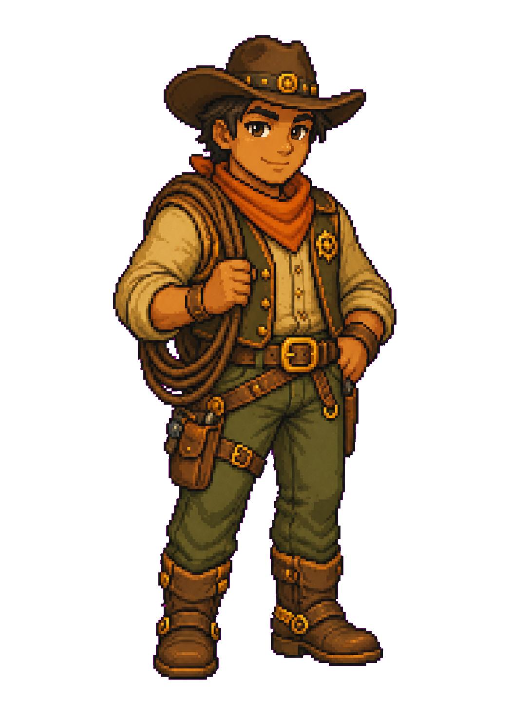

OpenClaw — the local bridge we route through.
OpenClaw is an open-source local routing layer that lets RHOBEAR reach your tools, agents, and machine safely. We didn't invent it. We integrated it deeply into the substrate so the rest of the recipe has somewhere clean to talk to your local environment.
OpenClaw is the local bridge that lets RHOBEAR reach your tools, agents, and machine safely — and you can swap it out without the substrate breaking.
A local routing layer for agent/tool communication, runtime adapters, workspace state, and self-hosted coordination APIs. Runs inside WSL as a systemd user service; the Telegram bridge hooks before_dispatch, verifies the owner ID, and routes the command through the local dispatcher.
dig in
OpenClaw depends on your provider accounts/sessions and local service health. It's not a hosted brain — if Claude/Pi/Ollama/GitHub auth is missing, the substrate tells you that plainly instead of pretending to fix it.

The contract is the seam.
OpenClaw is the work of the Earendil-works lineage — same family as Pi. RHOBEAR ships it as a Tauri sidecar, but the project is theirs. Swap it for another local bridge and the substrate doesn't break — the contract is the seam, not the implementation.